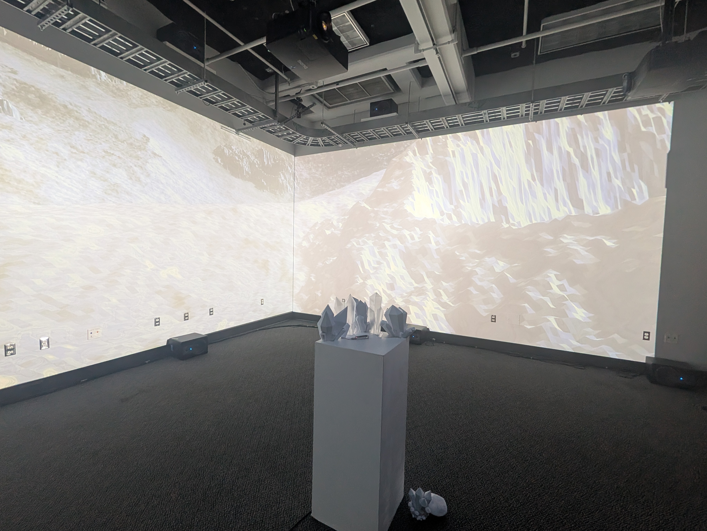
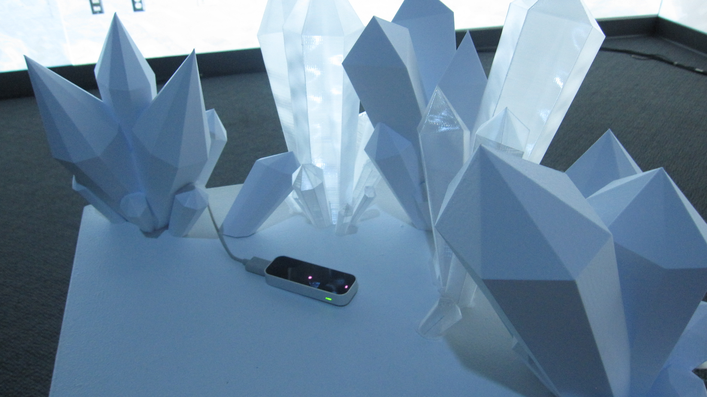

An immersive installation where a viewer explores a projected lunar surface of Saturn's moon Enceladus by moving their hand over a custom sensor array enclosed within 3D-printed ice structures.
The system integrates real-time physical interaction with digital terrain rendering. By sampling spatial position through hand movement over the physical sculpture, users directly manipulate the trajectory and focus of the surface simulation.